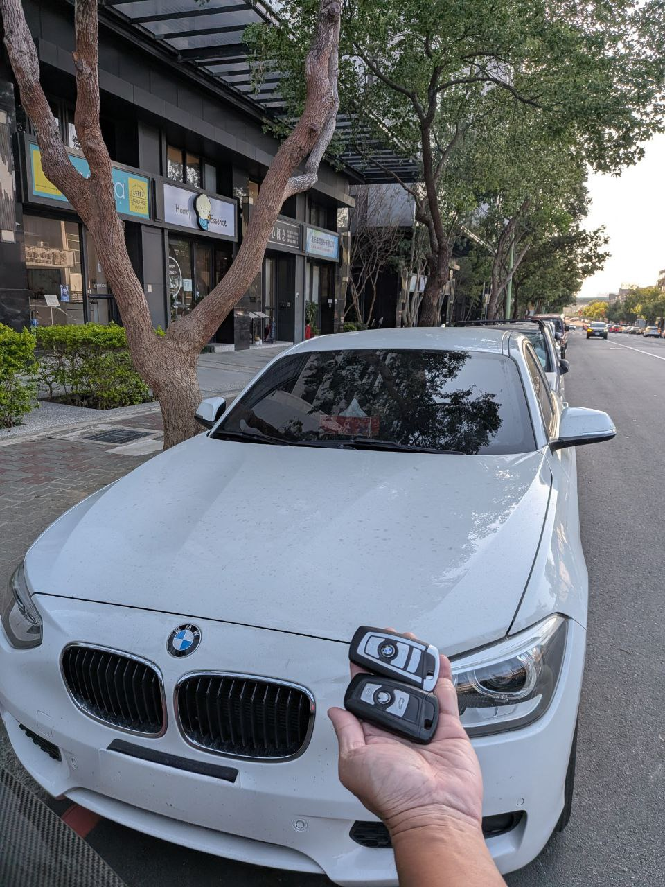

現場實拍：台中北屯 BMW 118 鑰匙全丟，到場評估與車況確認紀錄
F20 世代 BMW 鑰匙全丟先看車況
這台 2015 年的 BMW 118 (F20) 因鑰匙全丟無法正常用車。這類進口車不能只用車名判斷處理方向，必須先看車款年份、停放環境、鑰匙狀況與車輛供電，再評估後續安排。
極致核心：北屯車況與停放條件確認
接獲北屯車主求助後，先確認車輛停放位置、現場空間與基本車況，再依實車條件安排到場評估。本案完成後，交車前確認新鑰匙基本使用狀態，讓車主恢復後續用車安排。
BMW 車況與年份評估
針對 F 世代 BMW 進口車，先以車況、年份與現場可核對資訊判斷服務方向。
台中北屯 24H 救援
北屯、西屯、大雅地區可先傳停放照片、儀表提示與所在地評估。